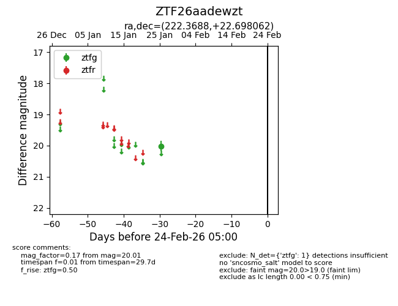
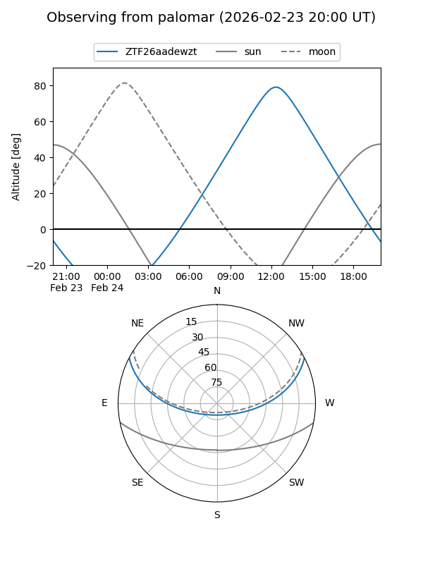

ZTF26aadewzt
Target ZTF26aadewzt at 2026-01-27 13:11
Aliases and brokers:
FINK: link
Lasair: link
ALeRCE: link
alt names
ZTF26aadewzt (ztf,fink_ztf)
Coordinates:
equatorial (ra, dec) = 222.3688,+22.69806
equatorial (HMS+DMS) = 14:49:28.52,+22:41:53.02
galactic (l, b) = (30.0755,+62.93620)
Flags:
Photometry:
last ztfg=20.01
1 ztfg detections
Lightcurve

Visibility


Additional plots